Proyecto

Plataforma GENIUS — Monitoreo satelital para la gestión y planificación de ciudades
El proyecto GENIUS, desarrollado por la Universidad de Playa Ancha de Ciencias de la Educación como beneficiaria principal, con la colaboración de la Universidad de Chile, la Ilustre Municipalidad de Quilpué, el Gobierno Regional de Valparaíso y Colorado State University, tiene como objetivo crear una plataforma de monitoreo satelital diseñada específicamente para apoyar la gestión y planificación de ciudades chilenas, enfocándose en la comuna de Quilpué y la región de Valparaíso.
GENIUS proporcionará acceso a datos clave sobre áreas verdes urbanas, contaminación del aire, huella urbana, luminosidad superficial y temperatura superficial, permitiendo a las autoridades locales, como las municipalidades y gobiernos regionales, tomar decisiones informadas y basadas en información actualizada.
Objetivo general
Desarrollar una plataforma tecnológica que contenga indicadores urbano-ambientales para la toma de decisiones en la planificación y gestión de estrategias de desarrollo sostenible en la ciudad, basada en imágenes satelitales.
Objetivos específicos
Desarrollar distintos indicadores de calidad urbano-ambientales para la gestión y planificación de ciudades sostenibles.
Definir requerimientos comunales de reportes de los indicadores establecidos.
Implementar una plataforma online para la recopilación, visualización y distribución de los indicadores, reportes y base de datos elaborada.
Elaborar una estrategia para la masificación y sostenibilidad de la plataforma online a través de la integración de aspectos institucionales, tecnológicos y financieros.
La propuesta de escalamiento del producto final, como Plataforma de monitoreo satelital para la gestión y planificación de ciudades, se proyecta más allá del actual proyecto IDeA i+d, abarcando la expansión geográfica a todas las ciudades de la región de Valparaíso y a nivel nacional. Esto implica el acceso a información crucial y actualizada de indicadores urbano-ambientales recopilados a través de EO (Observación de la Tierra), respaldando la toma de decisiones estratégicas para promover la eficiencia y sostenibilidad urbana.
Equipo
Directores

Marcelo Leguía
Geógrafo. Magíster en Áreas Silvestres y Conservación de la Naturaleza, Universidad de Chile. Posee experiencia en elaboración de planes de manejo y estudios ambientales. Actualmente se desempeña como Académico en la universidad de Playa Ancha.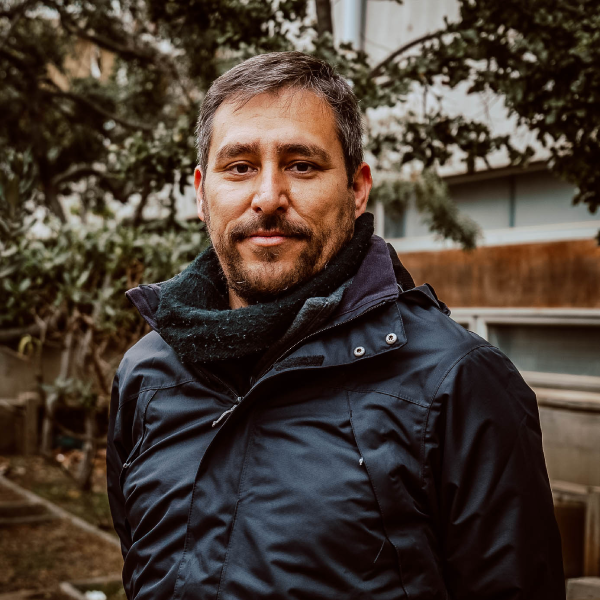
Carlos Romero
Geógrafo, DEA Gestión ambiental Universitat de Barcelona, Especialista en percepción remota, SIG y geomorfología fluvial, Profesor Asociado e investigador en la Facultad de Ciencias Naturales y Exactas UPLA, Consultor Senior de empresas de ingeniería y medioambiente.Investigadores principales
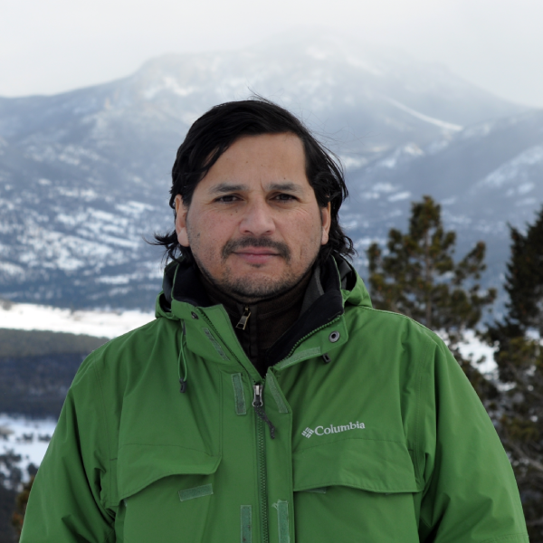
Freddy Saavedra
Ingeniero agrónomo, PhD en Ciencias de la Tierra en Colorado State University, posee experiencia en manejo de imágenes satelitales específicamente en productos de nieve e hidrología. Actualmente se desempeña como académico titular de la carrera de Geografía UPLA.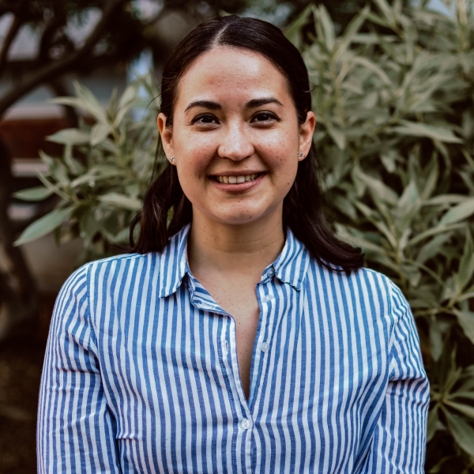
Ana Hernández-Duarte
Arquitecta, MSc. en Desarrollo Regional y Medio Ambiente, Dra(c) en Ciencias Ambientales de la Universidad de Playa Ancha, con experiencia en manejo de imágenes satelitales para el estudio de cambios de cobertura terrestre y de perturbaciones ecológicas. Es académica de la carrera de Geografía de la UPlA.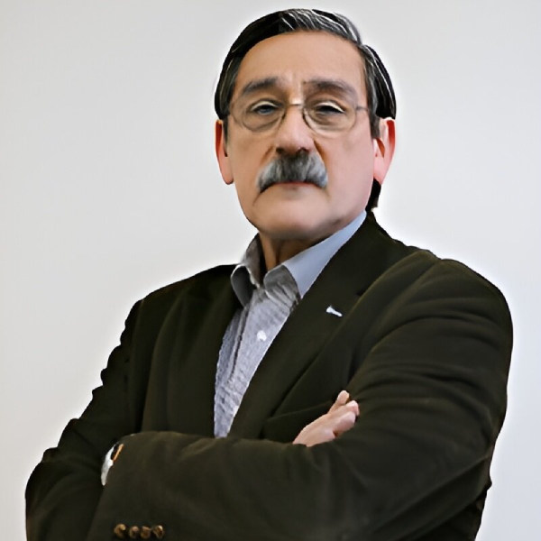
Florencio Utreras
Profesor Titular de la Universidad de Chile, es Ingeniero Matemático de la Universidad de Chile, Doctor en Ingeniería con Mención en Matemáticas Aplicadas de la Universidad de Grenoble, Francia. Director del Centro Regional Copernicus para América Latina y el Caribe en Chile (CopLAC-Chile).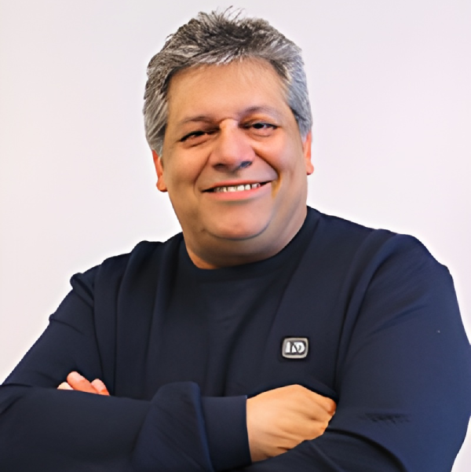
Jaime Ortega
Licenciado y Magíster en Matemáticas de la U. de Concepción y Doctor en Ciencias Matemáticas de la Universidad Complutense de Madrid. Es Profesor Titular del Departamento de Ingeniería Matemática e Investigador Principal del Centro de Modelamiento Matemático (CMM) de la Universidad de Chile. Actualmente es Director Científico del Centro Regional Copernicus para opernicus para América Latina y el Caribe en Chile (COPLAC-CHILE).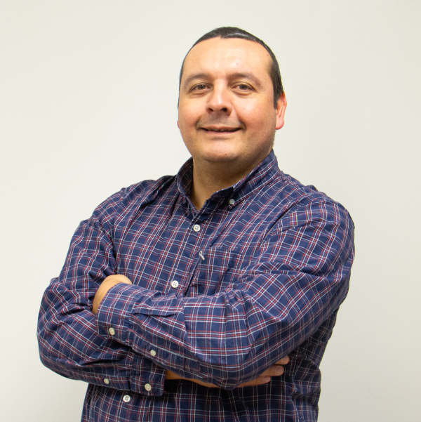
Pablo Sarricolea
Geógrafo. Doctor en Geografía, Planificación Territorial y Gestión Ambiental, Máster en Climatología Aplicada y Máster en Planificación Territorial y Gestión Ambiental (Universidad de Barcelona). Profesor Asociado en la Universidad de Chile, Departamento de Geografía. Investigador adjunto del Centro de Ciencia del Clima y la Resiliencia (CR)2. Investigador del "Regional Copernicus Centre in Chile - COPLAC-Chile". Experto en Geomática y climatología.Profesionales
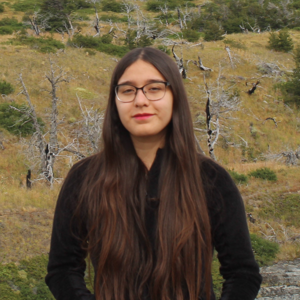
Valentina Contreras
Geógrafa de la Universidad de Playa Ancha, cuenta con experiencia en la utilización de imágenes satelitales en estudios de cambios de cultivos frutícolas y cobertura de nieve. Además, ha desarrollado investigaciones relacionadas con la implementación de Soluciones Basadas en la Naturaleza. En la actualidad, ejerce como docente en la carrera de Geografía de la Universidad de Playa Ancha.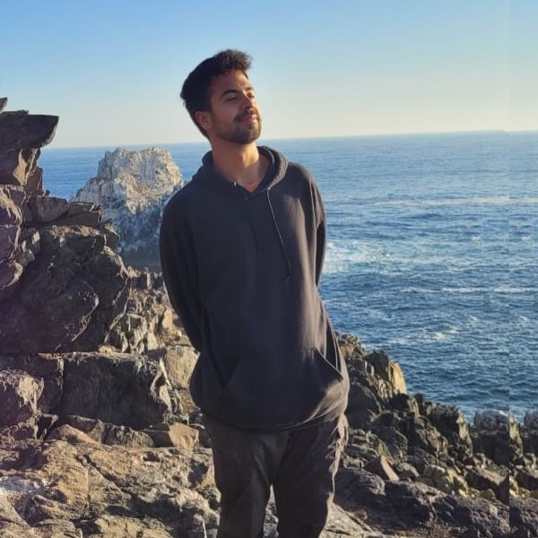
Javier Medina-Mendoza
Geólogo de la Universidad Andrés Bello (Viña del Mar), con experiencia en procesamiento de imágenes satelitales para temas de nieve y contaminación atmosférica. Su interés se centra en el uso de análisis multiespectral e hiperespectral en ciencias ambientales. Es Asistente de investigación en el laboratorio de teledetección ambiental en la Universidad de Playa Ancha (UPLA).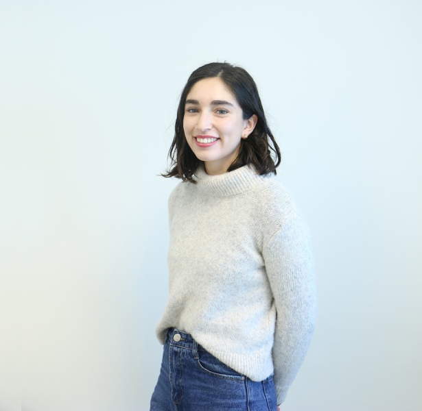
Francisca Gutiérrez
Licenciada en Geografía y titulada de Geógrafa de la Universidad de Chile con distinción máxima. Actualmente trabaja en el Laboratorio de Geomática Matemática del Centro de Modelamiento Matemático de la Universidad de Chile como analista de imágenes satelitales multiespectrales y de radar con aplicaciones medioambiente urbano y cambio climático.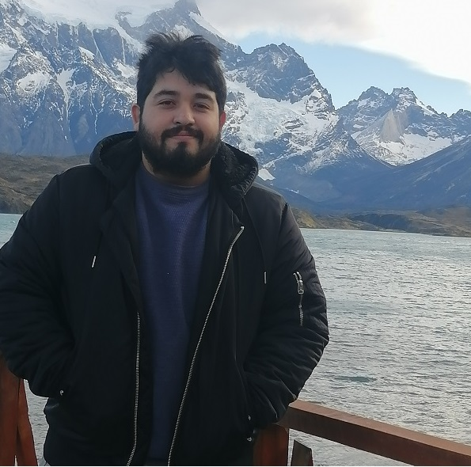
Pablo Arancibia Ramos
Geógrafo egresado de la Universidad de Playa Ancha, especializado en la creación de visualizaciones interactivas. Desarrollador con experiencia en HTML, CSS y JavaScript.Estudiantes
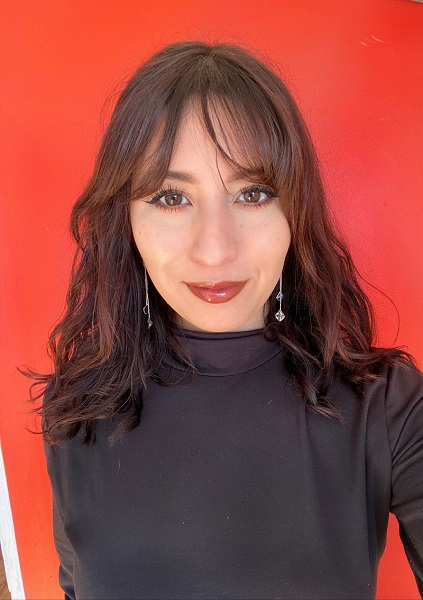
Gabriela Muñoz
Tesista enfocada en "Evaluación de la calidad y distribución de áreas verdes consolidadas en la comuna de Quilpué, mediante el uso de teledetección óptica".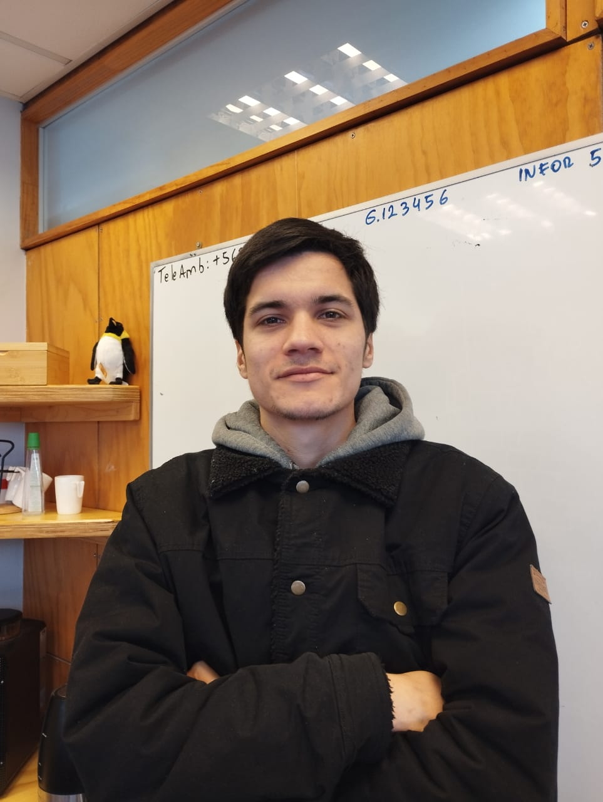
Fabián González
Tesista enfocado en"Propuesta de Regeneración de la Vegetación Nativa del Jardín Botánico Afectada por el Incendio Forestal de la Región Valparaíso de Febrero del 2024".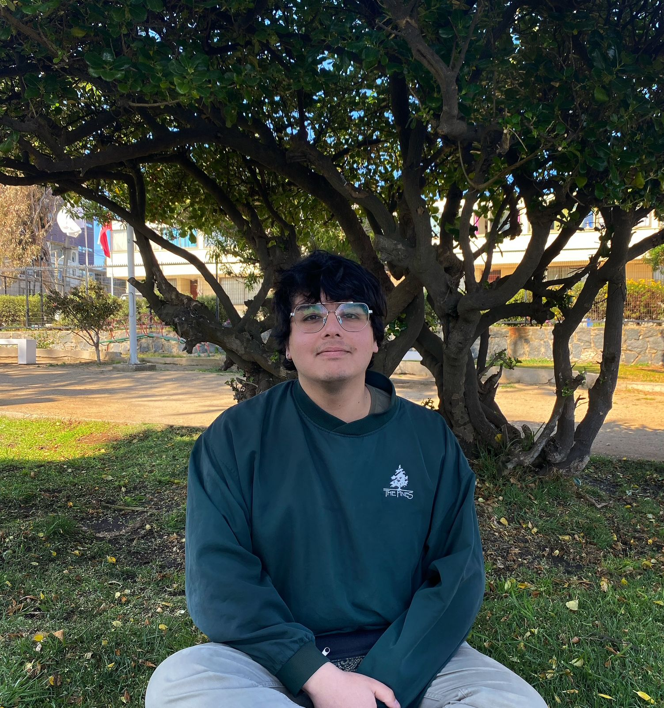
Pablo Caroca
Tesista enfocado en "Sensores remotos como herramienta de análisis de islas de calor. Evolución espacio-temporal de temperaturas superficiales en la ciudad de Quilpué."TeleAmb · UPLA